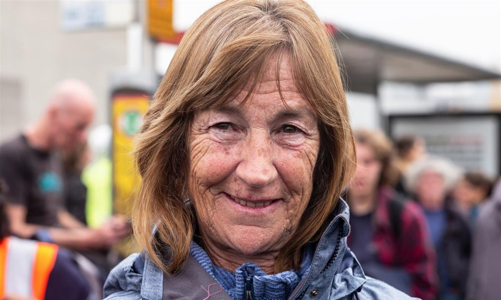
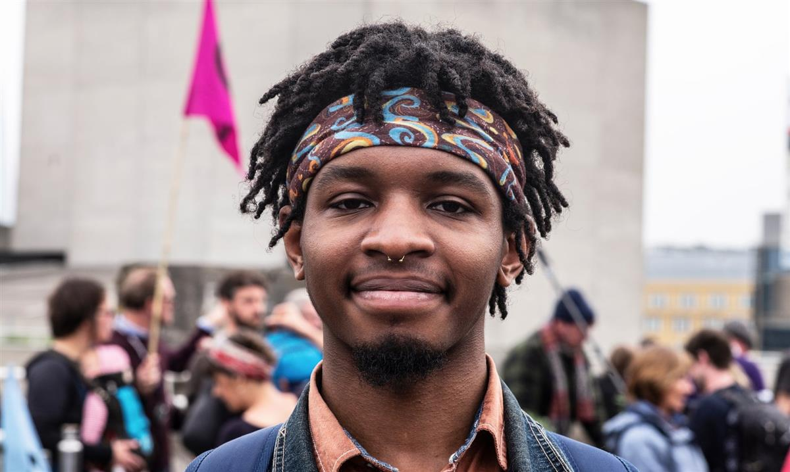

Extinction Rebellion activists occupy Waterloo Bridge in central London. Photograph: Sean Smith/The Guardian
Extinction Rebellion activists occupy Waterloo Bridge in central London. Photograph: Sean Smith/The Guardian
'I'm terrified': Extinction Rebellion activists on why they are protesting
People taking part in protests in London and Edinburgh explain their reasons for doing so
Nathan, 15, from Wanstead, east London
Nathan, who was into his second day of protest, was sitting in the road in Piccadilly Circus in front of a large “rebel for life” banner laid across the ground. He was wearing boots stained blue with spray chalk.
“We need to do something drastic to have action,” he said. “For the past 40 years we have known about climate change and we have tried to go through governments and peaceful marching through the streets and it hasn’t done anything.”
Nathan has been working with Extinction Rebellion as an organiser, which he said had been an incredible experience. “I was able to pick up so many skills … I’ve met some amazing people.”
He said he would be surprised if he made it to the end of the week without getting arrested. “I’ve had a couple of warnings from the police already,” he said. “But I’ve had training so I know my rights, I know what to do, so it’s not like this terrifying thing.”
Asked what his parents thought, Nathan said they were not particularly pleased. “They were like: ‘We are glad you’re fighting for a cause, but if you get a fine we are going to be mad.’”
Julia Spindel, 26, biology PhD student at Cambridge University
Spindel had been in London since Sunday and said she was supporting friends who were prepared to be arrested, although she had decided to try not to be arrested herself.
“I am just terrified that we will wipe our species out and take many others with us,” she said at Waterloo Bridge. “I feel like our politicians are simply not doing nearly enough. We have been peacefully demonstrating about this issue for so long with no impact that I think this is our last chance to do something in time.
“I have discussed this with my family and they are very proud and fully agree with my stance on this, although they are worried about me getting arrested.”
Pippa Clarke, 71, part-time English teacher from Frome, Somerset

Pippa Clarke: ‘There is nothing else left to do.’ Photograph: Sean Smith/The GuardianClarke said she hoped the protest would encourage politicians “to engage with the facts and begin to create the space to take meaningful action”.
“There is nothing else left to do,” she said at Waterloo Bridge. “We have tried protesting and we have tried making our case to the government calmly but they don’t listen. Now I feel we have to take part in civil disobedience in an attempt to meet the huge challenge we face. But because of Brexit it is very difficult at the moment to get our voice heard. It is frustrating because when you take a step back it is clear Brexit will be nothing if we don’t save the planet. Few people seem to realise that but that is genuinely the scale of what we are talking about here.
“I hear some people in government and politics do get this … If ordinary people like me – I am not a hardcore environmentalist or activist – are prepared to take a stand and even get arrested then surely that has to count for something?”
Mary Kennedy, retired health visitor from Edinburgh
Kennedy was handing out Penguin biscuits to protesters as part of her duties as a wellbeing steward at the Extinction Rebellion event in Edinburgh. “I’m here because I’ve got grandchildren and I really think something has to be done,” she said.
This was Kennedy’s first environmental protest, although she also marched against the Iraq war, and she commended the “really lovely” atmosphere. It was the significance of the protest that had brought her here, she said. “This is just so important. You have to be here – or be dead.”
She said her role was to help maintain the atmosphere, keeping an eye out for anyone who looked like they were becoming upset or angry, and intervening before things escalated.
Noting Monday’s protests in London, she said: “It’s not just happening across the UK but across the world and I don’t see it ending any time soon. It’s going to take a lot to make governments wake up to their responsibilities.”
Charlie Griffiths, 19, engineer from Cambridge
“The main reason I am doing this is because our government is lying,” said Griffiths, who was taking part in the blockade of Waterloo Bridge in London. “They are lying about issues on which there is concrete scientific consensus. For me it is totally unacceptable to lie against scientists who have spent their careers painstakingly researching this stuff.
“Protests around these environmental issues have been going on for decades and nothing has created meaningful proportionate change. I don’t want to be arrested but I am prepared to do that because what else is there? Write a letter to my MP, join Greenpeace – none of it seems to make much difference, so I feel there is no option but to take a stand.”
Josiah Finegan, 22, student from Bristol

Josiah Finegan: ‘I am freaking out about the climate.’ Photograph: Sean Smith/The GuardianFinegan, also at Waterloo Bridge, said it was the first time he had been on this sort of protest, and it was “really positive and interesting”.
“I am freaking out about the climate, to be honest,” he said. “There have been so many warnings from scientists about what we are facing, it is quite shocking. The government is not facing up to the evidence of what is happening, so I am here to try my best to get them to respond.
“My family and friends sort of agree about the climate stuff but don’t really want to face it properly and many of them are not the sort of people to take part in something like this, though I wish they would. But I am terrified. It is quite a terrifying prospect when you look at the facts. That’s why I’m here.”